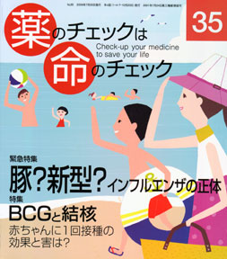

No.35 緊急特集 豚？新型？インフルエンザの正体、特集 BCGと結核 2009年7月 発行
緊急特集としてインフルエンザを取り上げました。
もう一つの特集はBCGと結核です。結核患者は世界で1年間に920万人が発病し、 170万人が亡くなっています（WHO、2006年度）。日本でも毎年約3万人が新たに発病し、 その5%約1400人が亡くなっています。
急性の感染症はすぐに症状が出ますので大騒ぎになるのでしょうが、密やかにジワジワと体をさせる 慢性感染症をもっと知ってほしいと思います。
もくじ
緊急特集 豚？新型？インフルエンザの正体 浜 六郎＋編集部
■ いつもと変わらん、軽いインフルエンザ
■ インフルエンザウイルスの構造と変異
■ 50歳代以上がかかりにくい理由
■ メキシコで死亡が多いのはなぜ？
■ タミフル全面解禁の怪
■ 高原病性インフルエンザでパンミックは起きない
■ インフルエンザ治療の8か条
■ 本誌で今まで取り上げた「かぜ・インフルエンザ・タミフル」関連記事
■ 書評：史上最悪のインフルエンザ 隅本邦彦
特集 BCGと結核
■ BCGの歴史 編集部
■ 専門医に聞く 高松勇さん
BCG接種の世界の流れは「集団・一律」から「個別・重点的」へ インタビューを終えて まとめ
■ 温故知新 BCGｎ効き目は？ 日本で今、役立つか？ 浜 六郎
■ BCGの意外な使用法 膀胱がんに対する注入療法 木元康介
■ 死病と恐れられた結核 谷田憲俊
■ 海外情報 高コレステロール食で結核が早く治る
連載
■ 医師国家試験に挑戦しよう！ 木元康介
■ リレーエッセー 銭湯は日本の宝 松本康治
■ みんなのやさしい生命倫理（35） 生老病死（5） 谷田憲俊
■ 行ってきました 前立腺がんPSA検診の是非を議論 木元康介
■ コーヒー無礼区 坂口啓子
その他
■ 質問箱（１）急性肝炎と言われたが？
（２）皮内テストでもショックは起きますか？
（３）心筋梗塞の既往あり、コレステロールの薬は必要？
■ 書評とイベント案内
■ 読者の声／次号予告
■ 医師国家試験に挑戦しよう！ 解答と解説
■ 用語の解説（記事に出てくる医学用語や統計学用語などを解説）
■ バックナンバー案内／常備店
■ 書籍申込用紙
■ 編集後記